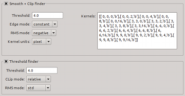

Here, the actual source finding algorithm can be selected and set up. Currently, only the smooth + clip source finder and a simple threshold finder are available.
| Module / Parameter | Type | Values | Description |
|---|---|---|---|
| steps.doSCfind | bool | true, false | Run the smooth + clip finder? |
| SCfind.threshold | float | ≥ 0.0; default: 4.0 | Flux threshold relative to the noise level. |
| SCfind.edgeMode | string | constant, reflect, mirror, nearest, wrap | Behaviour near the edge of the cube. |
| SCfind.rmsMode | string | negative, mad, std | Noise determination method: Gaussian fit to negative flux histogram (negative), median absolute deviation (mad), or standard deviation (std). |
| SCfind.kernelUnit | string | pixel, world | Are kernel parameters specified in pixel or world coordinates? |
| SCfind.kernels | string | list of kernels; default: [[0, 0, 0, 'b'],[0, 0, 2, 'b'],[0, 0, 4, 'b'],[0, 0, 8, 'b'],[0, 0, 16, 'b'],[3, 3, 0, 'b'],[3, 3, 2, 'b'],[3, 3, 4, 'b'],[3, 3, 8, 'b'],[3, 3, 16, 'b'],[6, 6, 0, 'b'],[6, 6, 2, 'b'],[6, 6, 4, 'b'],[6, 6, 8, 'b'],[6, 6, 16, 'b'],[9, 9, 0, 'b'],[9, 9, 2, 'b'],[9, 9, 4, 'b'],[9, 9, 8, 'b'],[9, 9, 16, 'b']] | List of kernels to be used for smoothing. Format is [[dx, dy, dz, 'type'], ...] where dx, dy, and dz are the spatial and spectral kernel sizes (FWHM), and 'type' can be boxcar ('b') or Gaussian ('g'). Note that 'type' only applies to the spectral axis, and the spatial kernel is always Gaussian. |
| SCfind.sizeFilter | float | 0.0 – 1.0 | Size filtering; set to zero not to size-filter (default and recommended). |
| SCfind.maskScaleXY | float | 2.0 | Set already detected pixels to σ × threshold × maskScaleXY before spatial smoothing. |
| SCfind.maskScaleZ | float | 2.0 | Set already detected pixels to σ × threshold × maskScaleZ before spectral smoothing. |
| SCfind.verbose | bool | true, false | If true, print progress information. |
| Default values are set in bold-face font. Parameters on a red background are not accessible through the user interface. | |||
| Module / Parameter | Type | Values | Description |
|---|---|---|---|
| steps.doThreshold | bool | true, false | Run the threshold finder? |
| threshold.threshold | float | ≥ 0.0; default: 4.0 | Absolute or relative flux threshold (see threshold.clipMethod). |
| threshold.clipMethod | string | relative, absolute | Should threshold be relative to the noise level or in absolute flux units? |
| threshold.rmsMode | string | negative, mad, std | Noise determination method: Gaussian fit to negative flux histogram (negative), median absolute deviation (mad), or standard deviation (std). |
| threshold.verbose | bool | true, false | If true, print progress information. |
| Default values are set in bold-face font. Parameters on a red background are not accessible through the user interface. | |||